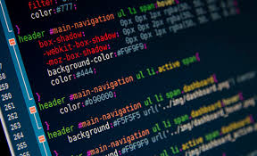
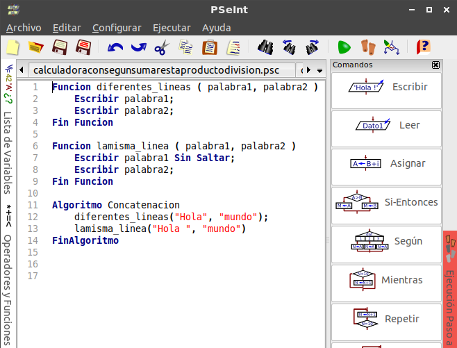
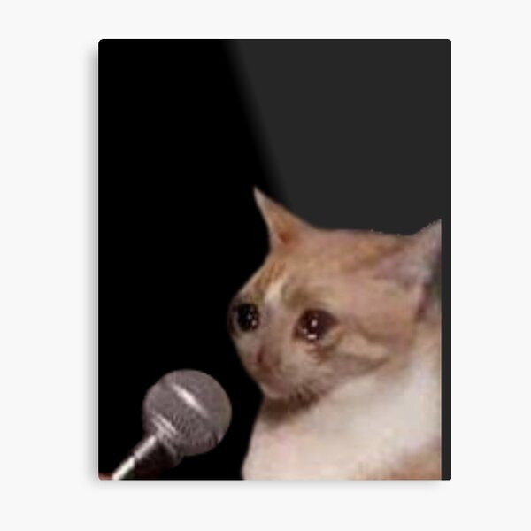
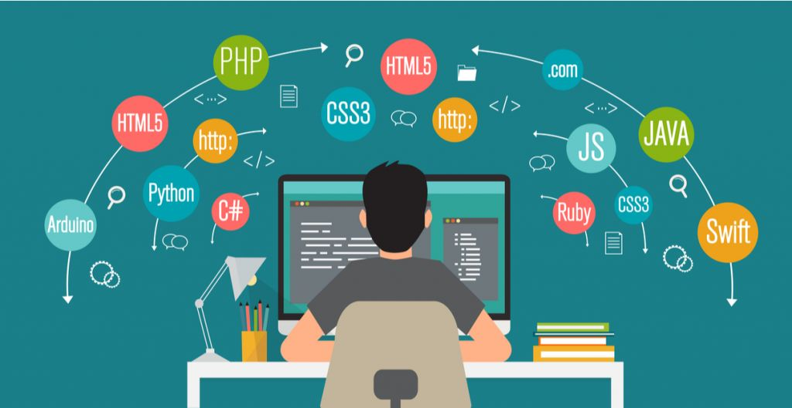

Inicio
01.11.2022
Cuando salí de la preparatoria, no tenía claro qué carrera estudiar. Solo sabía que quería algo que fuera un desafío y que me obligara a pensar y resolver problemas complejos. Inicialmente, estaba interesada en la física y planeaba estudiar esa carrera, hasta que tomé un año sabático en Estados Unidos. Allí, me inscribí en una universidad y, entre las áreas asignadas, se encontraba una materia de Computer Science. Esto despertó mi curiosidad, y comencé a investigar más sobre el mundo de la computación. La idea de resolver problemas a través de la tecnología me atrapó. Al final, mis planes cambiaron, y decidí estudiar en la Universidad Tecnológica de Durango (UTD). Aprender a programar ha sido mucho más que adquirir conocimientos técnicos; ha sido un viaje lleno de momentos de frustración, estrés y superación. Aquí comparto mi experiencia personal.
1. Los Comienzos
Al entrar a la UTD, me di cuenta de que no tenía conocimientos previos de programación, a diferencia de algunos de mis compañeros que ya estaban familiarizados con el tema. Esto me generó mucha frustración y dudas; sentía que quizás no me gustaría la carrera y que sería difícil ponerme al nivel de los demás. Sin embargo, todo cambió cuando comenzamos a estudiar lógica de programación. Fue entonces cuando entendí la belleza de resolver problemas y de crear soluciones lógicas. Poco a poco, esa sensación de frustración se transformó en interés y descubrí que, quizá, realmente podría disfrutar de esta carrera.
2. Primeros Logros
Pequeñas Victorias
Mis primeros proyectos fueron en Python, un lenguaje relativamente sencillo y accesible para principiantes, pero también poderoso y versátil. Fue emocionante ver cómo, con algunas líneas de código, podía crear programas que funcionaban en la terminal. Aunque eran proyectos pequeños y básicos, sentía una gran satisfacción cada vez que lograba que el código corriera sin errores. Estos primeros logros me dieron la confianza que necesitaba para seguir avanzando y descubrir todo lo que el mundo de la programación tenía para ofrecerme.

3. Desafíos
Superando Obstáculos
Uno de los mayores desafíos en esta carrera ha sido competir contra el tiempo. Aprender a programar no es necesariamente difícil, pero sí requiere una gran cantidad de tiempo y dedicación. Hay días en los que paso horas intentando resolver un problema o analizando el código, solo para encontrar un error que me frena. La programación exige paciencia, análisis y una disposición constante para aprender de los errores. Cada desafío me ha enseñado a ser más persistente y a no rendirme, incluso cuando la solución parece lejana.
4. Crecimiento y Futuro
Continuar Aprendiendo
Hasta este punto, he aprendido mucho sobre la carrera y, lo más importante, me he dado cuenta de que realmente disfruto de la programación. Cada proyecto, cada línea de código y cada reto superado me han ayudado a crecer no solo como estudiante, sino también como persona. A futuro, espero seguir mejorando mis habilidades, aprender nuevas técnicas y lenguajes, y aplicar mis conocimientos en proyectos que marquen una diferencia. Este es solo el comienzo, y estoy emocionada por todo lo que aún queda por aprender..
